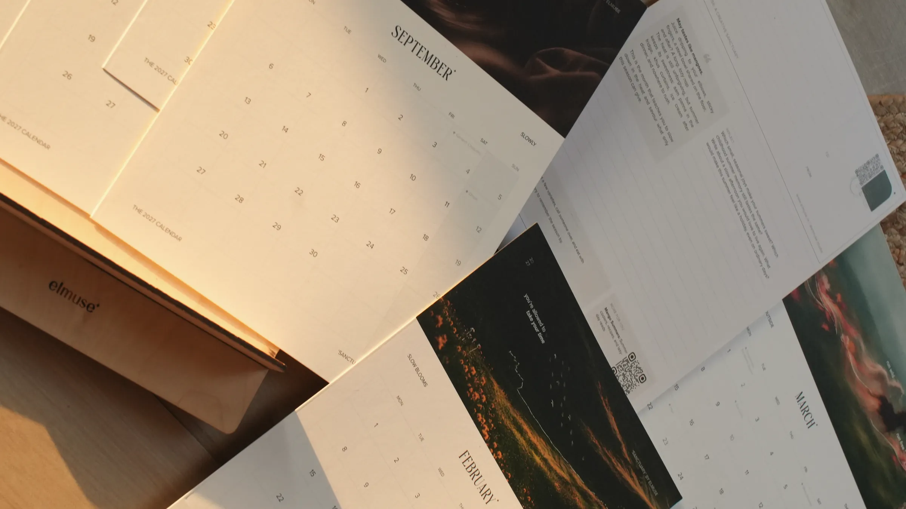
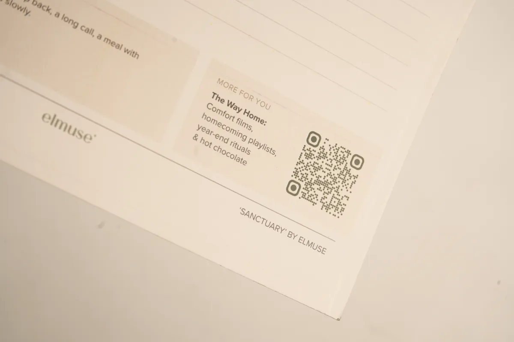

2027Sanctuary

2027 calendarSanctuary
It stands on a desk or hangs on a wall.
- Twelve sheets, a postcard to tear off each month
- Guest checkout; delivery cost shown before you pay
One sheet, four uses
Plan the month on the front, in weekly rows with room under each day. Turn it over to reflect: a short reflection, a prompt with lines to write on, and the month's ritual.
The picture tears off along a perforation, and its back is a postcard, ready for a stamp. On the 1st, the QR code opens the month's playlists, recipes, reading and places.
See it in 3D
SizeBoard 10 × 15 in, 4 mm thick. Desk plate 150 mm deep, wall plate 40 mm.
MaterialsBirch plywood with laser-charred edges, "elmuse" engraved on the strip below the ledge. Sheets on 320 gsm card.
StandingOn a desk, the table plate leans the board back about 21°. On a wall, it hangs from a brass plate on the back.
In the boxThe board, a ledge plate, a wooden peg, twelve month sheets, and two closing pages: twelve photo frames and a letter to the year.
Each sheetFront: the month's artwork, which tears off as a postcard, and the month grid. Back: the postcard back and a journal page with a reflection, a prompt, the ritual and a QR code.
CareWipe the board with a dry cloth. Keep it out of damp and strong sun.
Plan the month on the front
Weekly rows, with room under each day for the small things you mean to do.
Turn it over to reflect
A short reflection, a prompt with lines to write on, and the month's ritual.
Send the picture on
The artwork tears off along a perforation. Its back is a postcard, ready for a stamp.
Scan the QR on the 1st
At midnight it opens the month's playlists, recipes, reading and places.